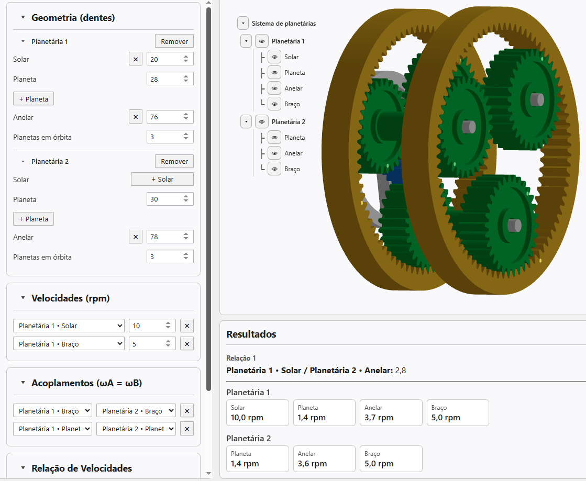
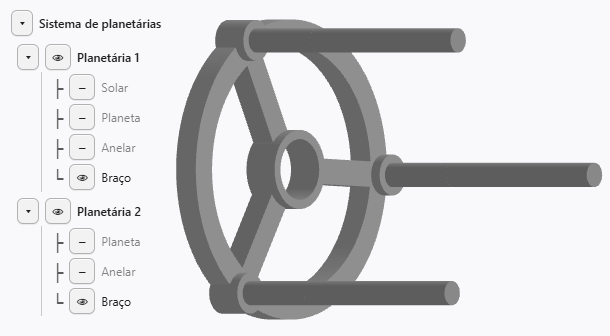

Este artigo mostra como montar, no Engrenarium, uma planetária composta de dois estágios. O exemplo usa um primeiro trem planetário completo e um segundo estágio sem engrenagem solar, conectado ao primeiro por acoplamentos entre braços e entre planetas.
Primeiro estágio
Abra um novo projeto no Engrenarium. No painel de parâmetros básicos, configure a primeira planetária com os seguintes números de dentes:
| Planetária 1 | Número de dentes |
|---|---|
| Solar | 20 |
| Planeta | 28 |
| Anelar | 76 |
Em seguida, clique em adicionar planetária. O Engrenarium interrompe a simulação e informa que o sistema cinemático está subdeterminado. Isso é esperado: ao criar um segundo estágio, ainda faltam velocidades conhecidas ou acoplamentos suficientes para definir o movimento.
Segundo estágio sem solar
Na planetária 2, apague a engrenagem solar e configure apenas o planeta e a anelar:
| Planetária 2 | Número de dentes |
|---|---|
| Planeta | 30 |
| Anelar | 78 |
Esse detalhe é importante: um estágio planetário não precisa conter todas as peças possíveis para participar do mecanismo. Neste exemplo, a segunda planetária trabalha sem solar e recebe movimento pelos acoplamentos.
Velocidades e acoplamentos
Agora imponha as velocidades angulares conhecidas na planetária 1:
| Elemento | Velocidade angular |
|---|---|
| Planetária 1 - Solar | \(10,0\ \mathrm{rpm}\) |
| Planetária 1 - Braço | \(5,0\ \mathrm{rpm}\) |
Depois, em acoplamentos, conecte os elementos correspondentes entre os dois estágios:
- Planetária 1 - Braço com Planetária 2 - Braço;
- Planetária 1 - Planeta com Planetária 2 - Planeta.
Em relação de velocidades, selecione Planetária 1 - Solar como entrada e Planetária 2 - Anelar como saída.

Equações do primeiro estágio
Na planetária 1, a relação entre solar, anelar e braço pode ser escrita pelas velocidades relativas ao braço:
Daí resulta:
A velocidade do planeta do primeiro estágio vem da relação de contato com a solar:
Equações do segundo estágio
Os dois acoplamentos transferem velocidades para o segundo estágio:
Como a planetária 2 não possui solar, a velocidade da anelar pode ser obtida pela relação entre planeta, anelar e braço:
Com entrada na solar da planetária 1 e saída na anelar da planetária 2, a relação indicada pelo Engrenarium é:
Resultados esperados
O painel de resultados deve mostrar a relação Planetária 1 - Solar / Planetária 2 - Anelar igual a aproximadamente \(2,8\).
| Elemento | Velocidade angular |
|---|---|
| Planetária 1 - Solar | \(10,0\ \mathrm{rpm}\) |
| Planetária 1 - Planeta | \(1,4\ \mathrm{rpm}\) |
| Planetária 1 - Anelar | \(3,7\ \mathrm{rpm}\) |
| Planetária 1 - Braço | \(5,0\ \mathrm{rpm}\) |
| Planetária 2 - Planeta | \(1,4\ \mathrm{rpm}\) |
| Planetária 2 - Anelar | \(3,6\ \mathrm{rpm}\) |
| Planetária 2 - Braço | \(5,0\ \mathrm{rpm}\) |
Por que os dois acoplamentos são necessários
Acoplar apenas os braços não basta. Fisicamente, os braços dos dois estágios poderiam girar juntos enquanto os planetas de cada estágio girariam com velocidades diferentes. Por isso, o acoplamento entre planetas também é essencial para transformar os dois estágios em uma planetária composta com movimento determinado.

Esse comportamento também explica por que a renderização do segundo braço desaparece. O modelo passa a representar um braço comum, ajustado para sustentar os planetas dos dois estágios e manter as restrições cinemáticas corretas.